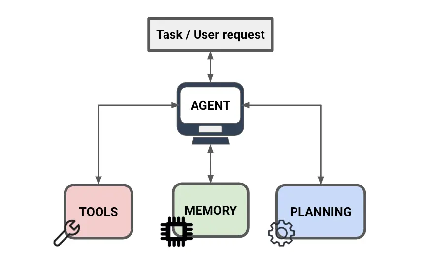
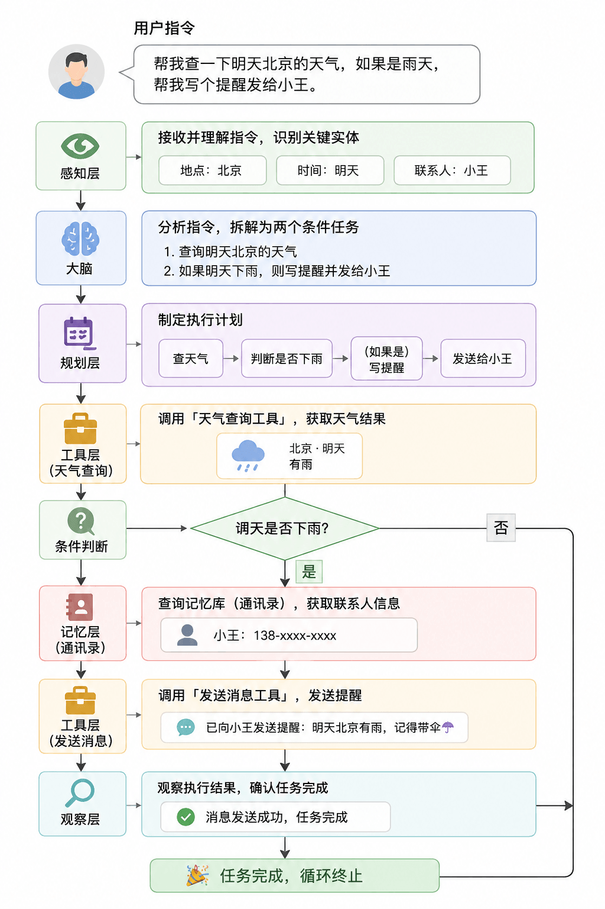

Componentes principales de AI Agent
Si comparamos un AI Agent con unrestaurante inteligente¿cómo convierte tus necesidades en platos servidos en la mesa? Esto no sería posible sin sus cuatro componentes principales:Cerebro, herramientas, memoria y planificación。
- Cerebro:Se encarga de entender los pedidos, determinar los objetivos y decidir el orden; es el centro de mando del restaurante.
- Herramientas:Se encargan de la ejecución práctica, incluyendo cortar, cocinar, comprar, etc., convirtiendo las decisiones en operaciones ejecutables.
- Memoria:Se encarga de registrar las preferencias del cliente, los pasos actuales y el contenido ya procesado, garantizando que el flujo no sea caótico ni repetitivo.
- Planificación:Se encarga de dividir el plato completo en pasos, determinar las relaciones de orden y asegurar que la tarea avance según el flujo hasta completarse.

Arquitectura general
La siguiente figura muestra los cinco niveles de componentes del AI Agent y sus relaciones de colaboración. La capa de percepción recibe entradas externas, el cerebro se encarga de la comprensión y la toma de decisiones, la capa de planificación descompone las tareas, la capa de herramientas se encarga de la ejecución, y la capa de memoria atraviesa todo el proceso, proporcionando soporte de estado para todas las etapas.

0. Capa de percepción (Perception) — Recepción del restaurante
Función: Se encarga de recibir a los clientes y comprender todas las entradas del mundo exterior.
Antes de actuar, el Agent debe primero "ver" y "oír" la información externa. El Agent moderno ya no se limita a la entrada de texto puro, sino que poseepercepción multimodalcapacidades:
- Entrada de texto: Instrucciones en lenguaje natural del usuario, contenido de documentos, código.
- Imagen / Video: Capturas de pantalla, diseños, gráficos; el Agent puede "ver la imagen" directamente para comprender.
- Datos estructurados: Tablas, JSON, resultados de consultas a bases de datos.
- Estado del entorno: En los Agent de operación de computadora, el estado actual de la pantalla, la estructura DOM de la página web, etc.
- Resultados devueltos por las herramientas: La salida de la llamada a la herramienta en el paso anterior se convierte en una nueva entrada de percepción para la siguiente iteración del bucle.
Las entradas de la capa de percepción se integran para formar el "contexto actual" del Agent y se envían al cerebro para su comprensión y toma de decisiones.
1. Cerebro (Brain) — Es decir, el modelo grande
Función: Elchef principal y gerente。
Esta es la parte más central del Agent (por ejemplo, GPT-4, Claude, DeepSeek, Tongyi Qianwen).
- Es responsable deentenderlo que quieres comer (comprender la intención).
- Es responsable dedirigira otros para que trabajen (toma de decisiones).
- Sin él, todo el restaurante quedaría paralizado.
Las tres tareas principales del cerebro
| Capacidad | Descripción | Analogía con el restaurante |
|---|---|---|
| Comprensión de la intención | Analizar la entrada del usuario y aclarar cuál es el objetivo. | Entender lo que pidió el cliente |
| Razonamiento y toma de decisiones | Integrar el contexto y la memoria para determinar qué hacer a continuación. | El chef decide qué plato preparar primero |
| Juicio de llamada a herramientas | Determinar si es necesario llamar a herramientas externas, elegir qué herramienta y qué parámetros pasar. | Decidir qué olla usar y quién va a comprar los ingredientes |
2. Herramientas (Tools) — Equipos de la cocina
Función：Utensilios de cocina y ayudantes。
Solo tener al chef principal (cerebro) no es suficiente; también se necesitan ollas, sartenes y platos para cocinar. Para un AI Agent, las herramientas son las unidades de ejecución que convierten las decisiones en acciones reales.
Las herramientas se pueden dividir en cuatro categorías según su uso:
| Categoría | Herramientas comunes | Función |
|---|---|---|
| Obtención de información | Búsqueda en línea, extracción web, lectura de documentos, consultas a bases de datos | Obtener información en tiempo real o profesional más allá del conocimiento propio del Agent |
| Cálculo y ejecución | Intérprete de código, motor de cálculo matemático, entorno sandbox | Manejar tareas que requieren cálculos precisos o lógica de programación |
| Generación de contenido | Generación de imágenes, síntesis de voz, exportación de documentos | Producir contenido en formas distintas al texto |
| Interacción con sistemas | Interfaces API, correo electrónico, calendario, operaciones de archivos, envío de mensajes | Interactuar con sistemas externos, servicios y el mundo real |
Ejemplos de herramientas comunes:
- Búsqueda en línea Obtención de información(Como ir al mercado a comprar ingredientes frescos)
- Intérprete de código Cálculo y ejecución(Como un horno de precisión que maneja cálculos complejos)
- Herramienta de dibujo Generación de contenido(Como el chef de emplatado, encargado de la estética)
- Interfaces API Interacción con sistemas(Como el repartidor, que conecta con el mundo exterior)
3. Memoria (Memory) — Libreta de registros de clientes
Función：La memoria del camarero。
Seguramente no te gusta tener que repetir cada vez que vas al restaurante: ¡No como cilantro!
La memoria del Agent se divide en los siguientes tipos:
- Memoria a corto plazo (In-Context Memory): Es la ventana de contexto del diálogo actual. Recuerda lo que dijiste hace un momento (por ejemplo, si acabas de pedir pescado y luego dices "un poco picante", sabe que se refiere al pescado). Limitada por la longitud de contexto del modelo, normalmente entre 8K y 200K tokens.
- Memoria a largo plazo (External Memory): Recuerda tus preferencias a largo plazo (por ejemplo, si eres vegetariano o tu dirección de casa). Generalmente se implementa mediantebases de datos vectoriales(como Pinecone, Milvus, Chroma) para lograr almacenamiento persistente.
- Memoria episódica (Episodic Memory): Registro del proceso de ejecución de tareas históricas, incluyendo "cómo manejé una situación similar la última vez", lo que ayuda al Agent a aprender de experiencias pasadas.
- Memoria semántica (Semantic Memory): Conocimiento abstracto y hechos, generalmente provenientes del contenido internalizado durante la fase de preentrenamiento; también se puede complementar dinámicamente mediante RAG (generación aumentada por recuperación).
RAG: Dar al Agent una "base de conocimientos externa"
Generación aumentada por recuperación (Retrieval-Augmented Generation, RAG)Es actualmente la solución más común para implementar memoria a largo plazo. Su flujo principal es el siguiente:
4. Planificación (Planning) — Hoja de proceso de cocina
Función：El SOP de salida de platos de la cocina。
Cuando pides un Fotiaoqiang, el chef no cocina al azar, sino que genera una lista mental:
- Primero preparar los ingredientes (abulón, pepino de mar...)
- Luego hervir el caldo
- Finalmente, cocinar a fuego lento
El Agent es igual. Cuando le das una tarea compleja (por ejemplo, "escribe un informe de análisis de la competencia"), se descompone por sí mismo:
- Primer paso: recopilar información de los competidores A, B y C.
- Segundo paso: comparar sus precios y funciones.
- Tercer paso: redactar un artículo con los resultados de la comparación.
- Cuarto paso: revisar si hay errores tipográficos.
Estrategias de planificación principales
Las estrategias de planificación determinan cómo el agente "piensa" y luego "actúa"; las diferentes estrategias varían en profundidad de razonamiento y en escenarios de aplicación:
| Estrategia | Nombre completo | Idea central | Escenarios aplicables |
|---|---|---|---|
| CoT | Chain-of-Thought | Escribir el proceso de razonamiento paso a paso antes de dar la respuesta | Razonamiento matemático, análisis lógico |
| ReAct | Reasoning + Acting | Alternar entre "razonamiento" y "acción", y volver a razonar según el resultado después de cada acción | Tareas dinámicas que requieren llamadas a herramientas |
| ToT | Tree-of-Thoughts | Explorar simultáneamente múltiples ramas de razonamiento y seleccionar la ruta óptima entre ellas | Decisiones complejas, tareas creativas |
| Reflection | Autorreflexión | Después de completar la tarea, el agente revisa críticamente su propia salida y la corrige | Generación de código, redacción de textos largos |
5. Bucle de ejecución del Agent (Agent Loop)
Los componentes anteriores no existen de forma aislada; forman un proceso de iteración continua:Percepción—Pensamiento—Acción—ObservaciónUn bucle cerrado, conocido como "Agent Loop". El agente repite este ciclo continuamente hasta que la tarea se completa o se alcanza una condición de terminación.
Este ciclo le otorga al agente la capacidad deautocorregirse en caso de fallo: si una llamada a una herramienta en algún paso devuelve un error o un resultado inesperado, la fase de "observación" retroalimenta esta información al cerebro, y el cerebro ajusta la estrategia en la siguiente ronda de "pensamiento".
Resumen
Cuando le dices al agente:"Ayúdame a consultar el clima de mañana en Beijing; si llueve, escríbeme un recordatorio y envíalo a Xiao Wang."
El agente opera internamente de la siguiente manera:
- Capa de percepción: recibe la instrucción en lenguaje natural e identifica las entidades clave "Beijing", "mañana" y "Xiao Wang".
- Cerebro: interpreta la instrucción y analiza dos tareas condicionales: consultar el clima y, si llueve, enviar un recordatorio.
- Planificación: primero consultar el clima → determinar si llueve → (si es así) escribir el recordatorio → enviarlo.
- Herramienta: llama a la "herramienta de consulta del clima" y obtiene el resultado: mañana lloverá.
- Memoria: consulta la información de contacto de "Xiao Wang" en la agenda de contactos (base de memoria).
- Herramienta: llama a la "herramienta de envío de mensajes" y envía el recordatorio.
- Observación: confirma que el mensaje se envió correctamente, la tarea está completa y el ciclo termina.
Diagrama del proceso de ejecución:

Resumen de los cinco componentes principales
| Componente | Analogía del restaurante | Responsabilidad principal | Tecnologías clave |
|---|---|---|---|
| Capa de percepción | Recepcionista | Recibir entrada multimodal y construir contexto | Modelos multimodales, OCR, ASR |
| Cerebro | Chef y gerente | Comprender la intención, razonar y tomar decisiones, e invocar instrucciones | LLM、Function Calling |
| Planificación | SOP de servicio de platos | Descomposición de tareas, ordenamiento de pasos, autorreflexión | ReAct、CoT、ToT、Reflection |
| Herramienta | Utensilios de cocina y ayudantes | Ejecutar operaciones concretas y conectarse con el mundo exterior | Búsqueda / código / API / sistema de archivos |
| Memoria | Libro de registro de clientes | Gestionar el contexto y almacenar conocimiento a largo plazo | Base de datos vectorial, RAG, ventana de contexto |
Haz clic para compartir notas
<p style="font-size:14px;">¡La nota debe ser una extensión del contenido de este artículo!</p><br> <p style="font-size:12px;"><a href="../tougao.html" target="_blank">Para enviar un artículo, haz clic aquí</a></p> <p style="font-size:14px;"><a href="../w3cnote/runoob-user-test-intro.html" target="_blank">Cómo obtener el código de invitación de registro</a></p> <h3 class="text-muted"><i class="fa fa-info-circle" aria-hidden="true"></i> ¡Debes <a href=";.html" class="runoob-pop">iniciar sesión</a> antes de compartir notas!</h3> <p><a href="../w3cnote/runoob-user-test-intro.html" target="_blank">Cómo obtener el código de invitación de registro</a></p>